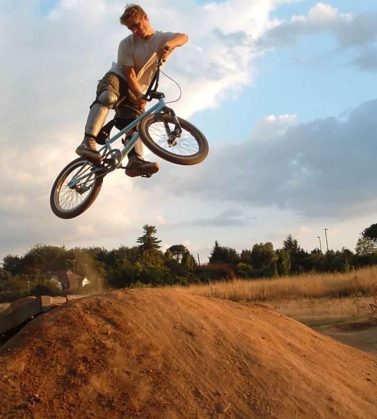
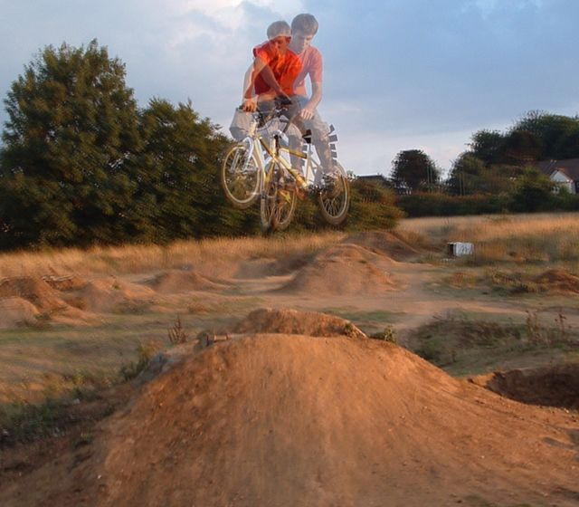
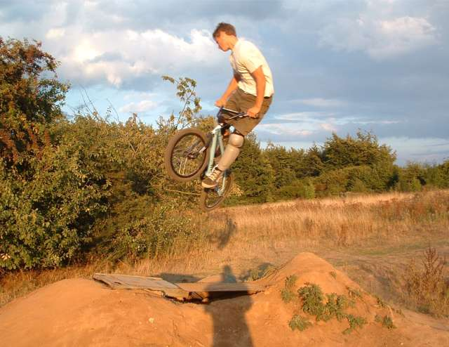
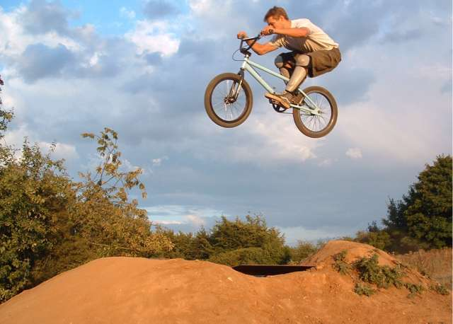
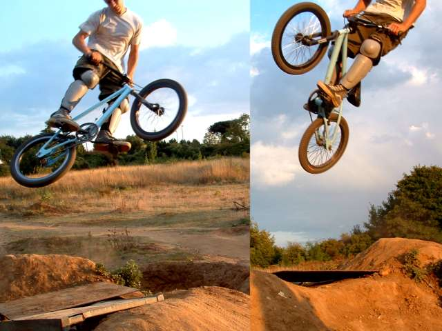
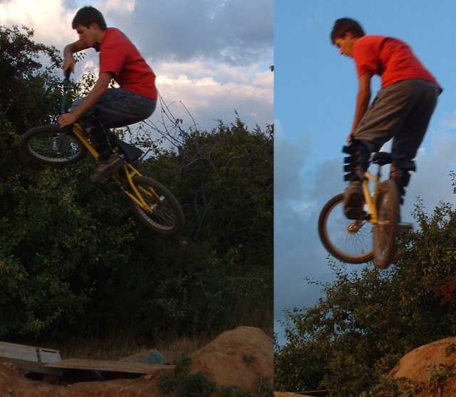
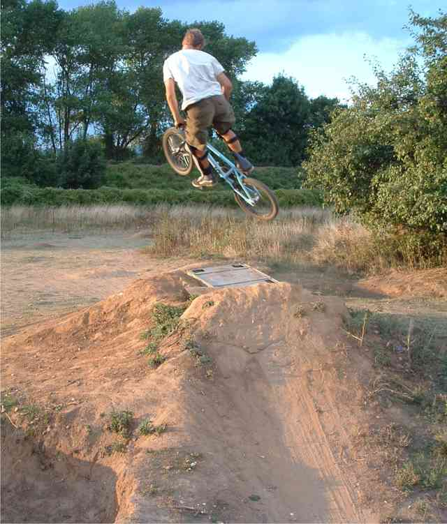

|
 these pictures are from the trails in maidstone. considering that they are only about 10 miles from our house, we thought that it was pretty stupid that we had never been there, so we went. the main line was not running, and the small line was not smooth and had been knocked around a lot, but was still fun. all of these photos are taken on the big hip jump and the end. tim with a look back attempt  probably the best thing about the day (at least for me) was that i learnt xups. they have been troubling me for long time, but i can do them, nice and straight legged now too, which is nice and fun. tim liked this camera angle. i thought it was bad, but it looks ok to me now. that's me trying an xup and a kick out, different times.  above, tim with a whip, below with a tuck. i got my camera out just as the sun came out. it was going down, and it gives these photos some good colours. it makes good shadows too which makes taking photos easier and more fun.  a whole load of locals turned up which was ok, but not many of them rode much, so it was a bit weird. they didn't seem to ever build there either, and they younger ones seemed to ride over everything pulling apart the lips. i was hard not to get annoyed at them for wrecking it, but i guess they are their trails, not mine.  four tricks, clockwise. some kind of kickout/transfer type thing, accidental griz, attempted table which looks like i could start a turndown, and mini whip. usually i don't care too much about pulling tricks, but i had just learnt xups and there wasn't much else to ride, so i tried some other tricks. tabletops have been evading me for almost a year now. i want to try a griz.   |